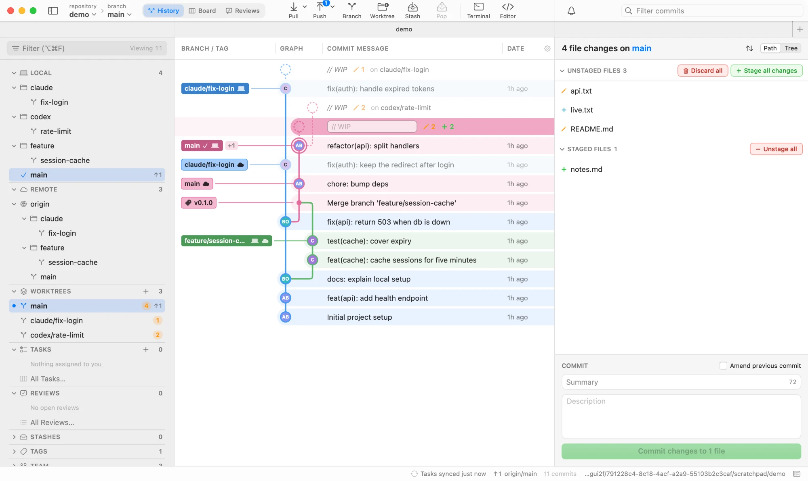
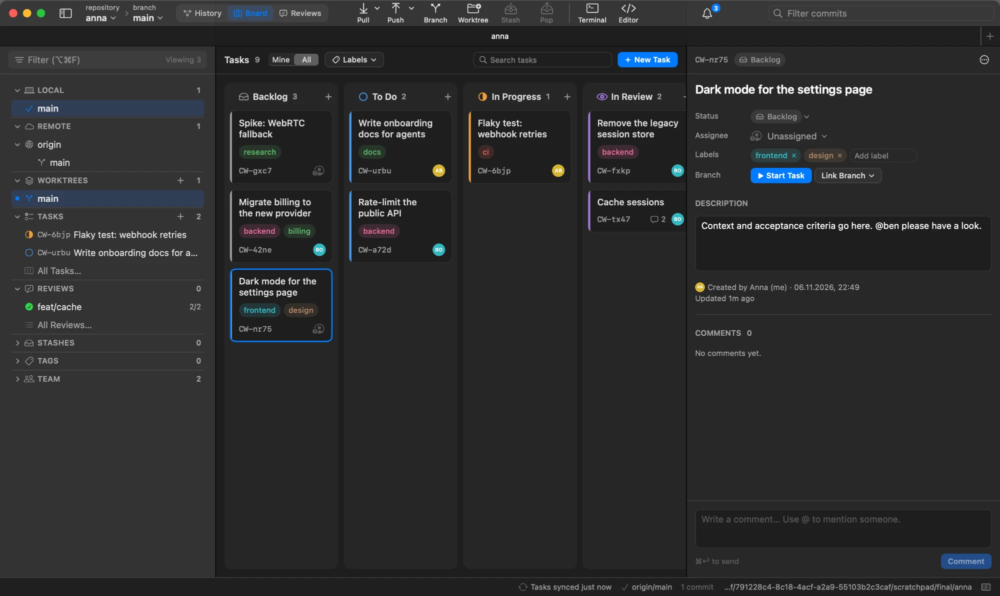

A native Git client for Mac that costs nothing.
A fast Git GUI that shows every branch, worktree and AI agent in one graph, plus a task board that lives inside your repo.
License keyAccountSubscriptionServerTelemetry
Apple Silicon · macOS 14 or newer · open source

The price, as a diff
Most Mac git clients are paid. This one isn't, and there's nothing to activate or sign in to.
Built for how teams work now
Lots of branches, lots of worktrees, often several agents committing at once. git-cowork shows all of it and stays out of the way.
Worktrees first
Every worktree shows in the sidebar and the graph, with live uncommitted counts and ahead/behind. claude/… and codex/… branch folders open by default.
Tasks and reviews in the repo
A shared board and review requests stored on a hidden ref, refs/cowork/main, and synced with plain git push and fetch. Works with GitHub, GitLab, Gitea, Forgejo or any git server.
Just git
Every action is a normal git command, listed in the command log (⌘J). Your SSH keys, credential helpers, hooks and commit signing work exactly as in the terminal.
Small and fast
Native SwiftUI and AppKit, no Electron. Measured on a repo with 8.7k commits and 27 worktrees:
Claude Code and Codex in parallel worktrees
Running several agents at once works best when each one gets its own git worktree. The hard part is keeping track of them. git-cowork shows every worktree in one place.
- One graph for all of them. Each worktree's branch, its uncommitted changes as a // WIP row, and how far it is ahead of or behind main.
- Start a task in its own worktree. "In New Worktree" creates the branch and folder and opens it in a new tab, ready to hand to Claude Code or Codex.
- Review before you merge. Request a review of the agent's branch, read the diff and leave a verdict, all without leaving the repo.
- Clean up. Remove finished worktrees from the sidebar. Every action is plain git worktree underneath, shown in the command log.
Hand out work without leaving the repo
Backlog, To Do, In Progress, In Review, Done. Teammates see the board as soon as they open the repo.
- Start Task creates the branch. In New Worktree gives it its own folder and tab, handy for agents.
- Review requests with verdicts and comments, next to the branch's changes.
- An inbox and macOS notifications for assignments, reviews and @mentions.
- Readable without the app:
git show refs/cowork/main:tasks/<id>.md

Install in about a minute
You build it on your own Mac, so there's no download to trust and Gatekeeper doesn't complain.
-
xcode-select --installSkip this if you already have git and Swift.
-
git clone https://github.com/michael-smao/git-cowork.git && cd git-cowork -
make installPuts git-cowork.app in Applications. Run
make updatelater to update.
Questions
Is it really free?
Yes. It's a free Git GUI for Mac with no trial, no paid tier and no license key. The code is on GitHub and you build it yourself.
How does it compare to Tower, Fork or GitKraken?
Those are mature clients, and most of them cost money or need an account. git-cowork is free, never asks you to sign in, and focuses on worktrees, agents and tasks in the repo.
Is my data sent anywhere?
No. The app only talks to your git remotes, through your own git.
Does it use AI?
No. It's a git client that works well when agents are making the commits.
Intel, Linux or Windows?
Not supported. git-cowork targets Apple Silicon and macOS 14 or newer.
Do teammates need it?
Only to see the board. Everything else is plain git, so the rest of the team can keep their tools.